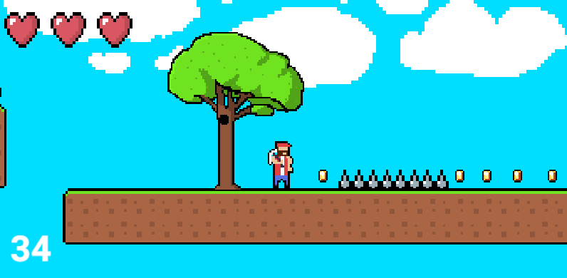

Platformer
Введение
Привет, друзья! Презентую вам мой проект - компьютерная игра Platformer
Идея и мотивация
Все началось с простого интереса к компьютерам, в частности к играм. Еще с раннего детства меня нравилась идея работать разработчиком игр, именно поэтому я в 11 классе решил сделать свой собственный игровой проект.
Инструменты разработки
Для реализации своей игры я использовал следующие инструменты
- Aseprite - Программа для рисования отдельными пикселями
- Unity - Игровой движок
- Visual Studio - Среда разработки
Итоговый результат
Вот как выглядила игра после завершения разработки:
